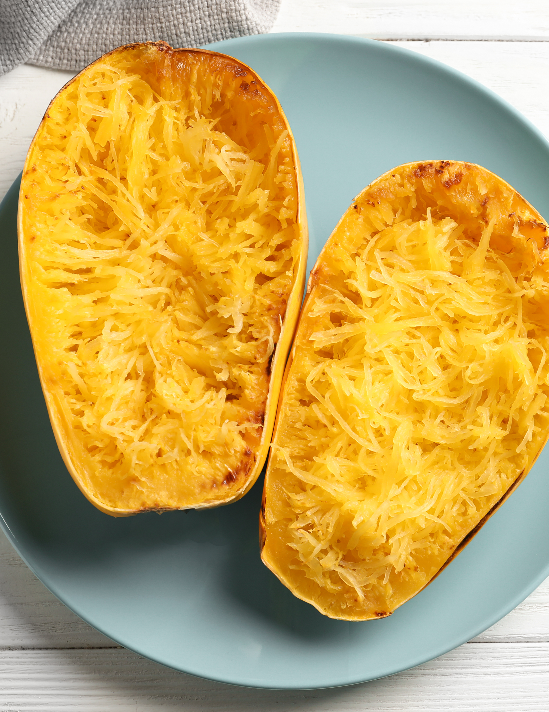

Spaghetti Squash

Roast Spaghetti Squash
Roast your own spaghetti squash as a carb-friendly alternative to pasta
Ingredients
- Spaghetti Squash
- Olive Oil
- Spices
Steps
- Preheat oven to 400 degrees
- Cut spaghetti squash lengthwise
- Rub inside of squash with olive oil and season generously with salt and pepper
- Place cut side down on baking sheet lined with foil
- Bake for 35-55 minutes depending on preference (Shorter time is firmer "noodle")
Home